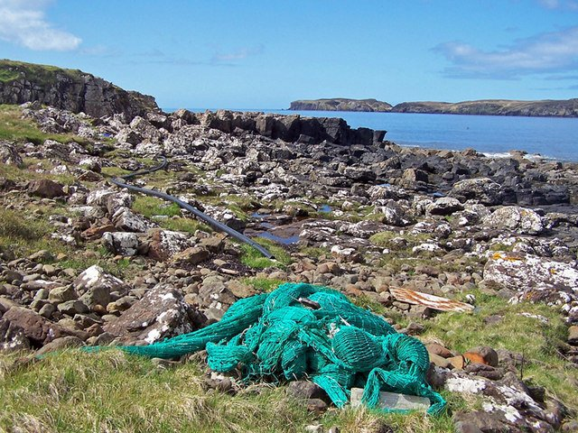

想像一張被丟掉的漁網。沒有人去收、沒有人去管。
它沉在海裡、漂在水面、卡在礁石上——但它仍然在抓魚。
海龜被纏住、海豚被纏住、海豹被纏住。 有的脫得開——脫不開的就溺死。
這就是「幽靈漁網」
「幽靈漁網」（Ghost Net）就是被丟棄、但還在「捕魚」的漁網。 它是一種沒有主人、卻一直在殺生的陷阱。
全球海洋裡，有 64 萬噸幽靈漁網。 相當於 5 萬輛公車的重量，全部漂浮在海上、卡在珊瑚上、纏住生物。
夏威夷的小僧海豹
前面那張照片，是一隻夏威夷僧海豹。牠的脖子被廢棄漁網勒住， 游不動，被海浪沖上沙灘，在那邊喘氣。
NOAA 漁業署的研究員及時趕到，把網子剪掉，把牠救回去。

但全世界夏威夷僧海豹只剩約 1,500 隻。少救一隻， 就是少 0.07%——這個物種隨時可能滅絕。
每年清 50 噸——但只是萬分之一
NOAA 漁業署很努力。他們每年從夏威夷海域移除 50 噸幽靈漁網。
這已經是非常大的數字。但對比海洋裡的 64 萬噸——這只是萬分之一。
想想看：為什麼漁夫會丟漁網？ 一張漁網很貴，照理不會隨便丟。 答案：颱風、暴風雨、被卡到拉不起來——很多時候是「不得不丟」。 那要怎麼解決呢？
Source · NOAA Fisheries Hawaii； World Animal Protection《Ghost Gear》報告（2018）